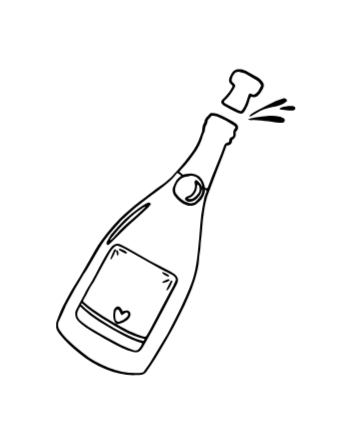
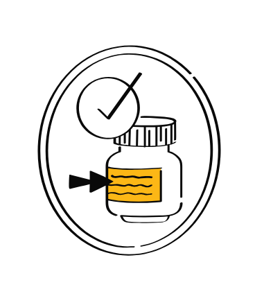
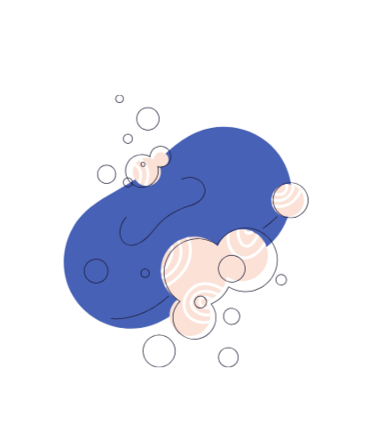
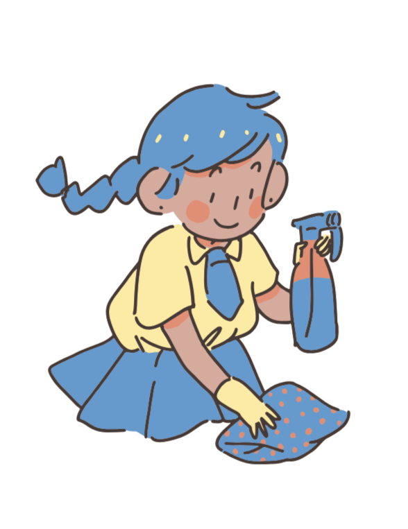

Glass bottles can be recycled many times without losing quality. Follow these steps to recycle glass properly.

Empty the bottle and rinse it with water.
Remove labels by soaking in warm water.
Wash thoroughly using soap.
Let it dry completely.💡 Tip: Glass can also be reused as containers or decorations.